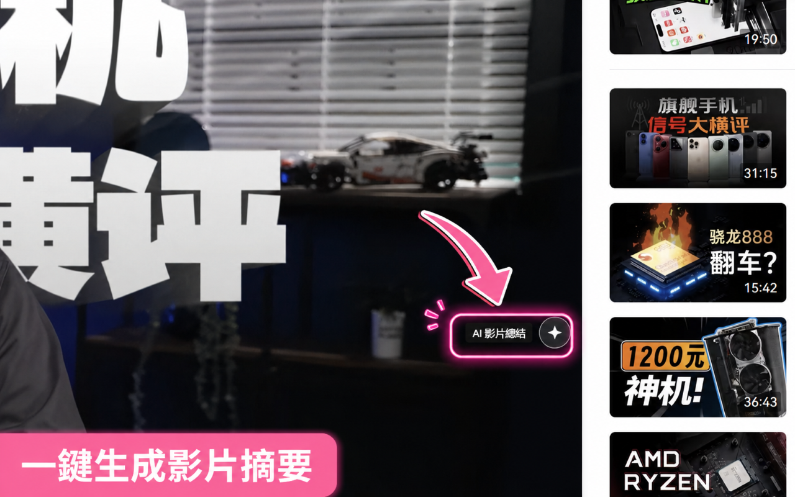
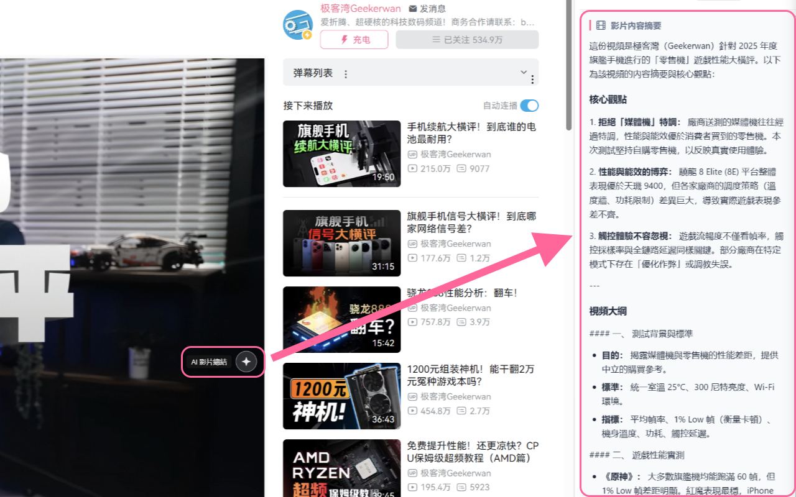
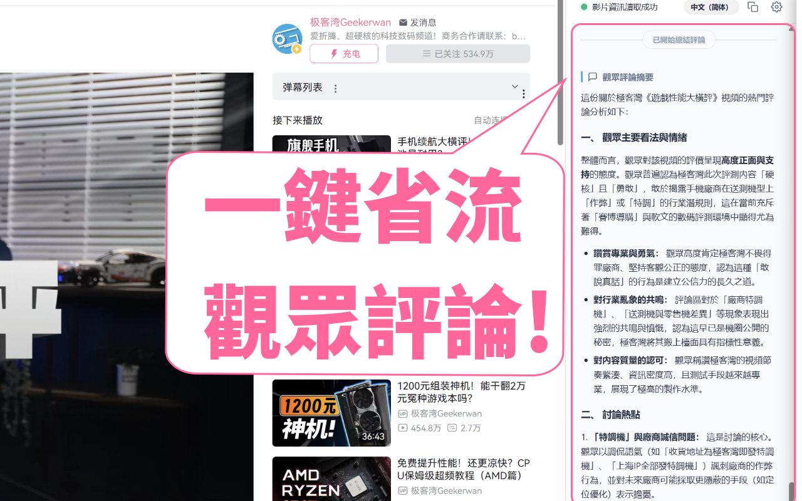
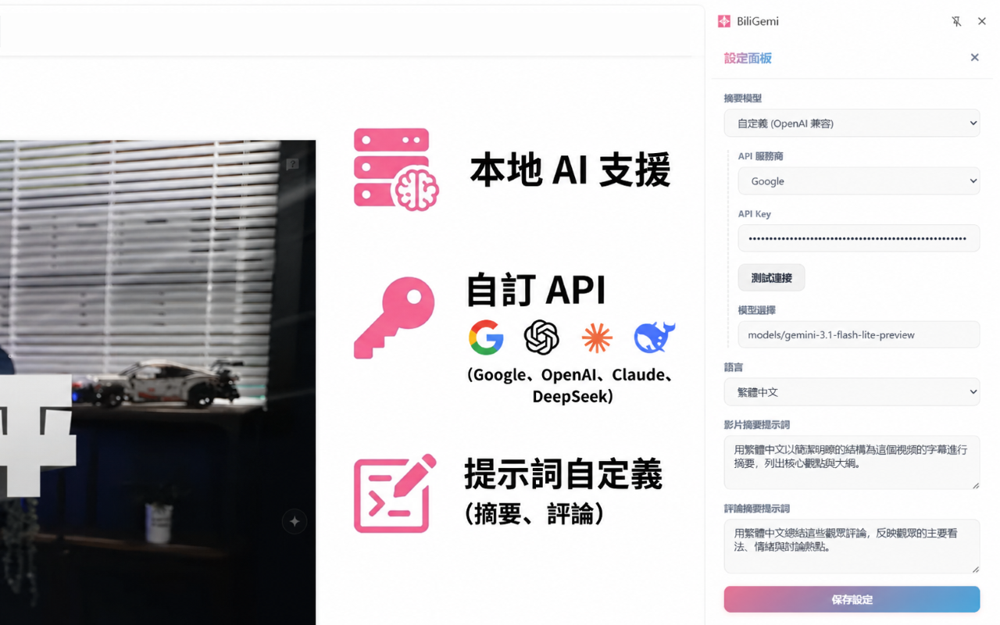

bilibili x Gemini B站視頻摘要
滑鼠輕觸影片，AI 摘要按鈕即刻浮現。不干擾觀看體驗，需要時隨時為你待命。

點擊按鈕，側邊欄瞬間展開。AI 快速提煉影片核心觀點與大綱，幫你省下寶貴時間，重點不漏接。

影片太長、評論太多？一鍵總結熱門評論，快速掌握大眾真實看法與情緒，洞悉社群討論熱點。

支援本地 AI 處理，保護隱私更安心；亦可接入各大主流自訂 API。隨心調整提示詞，打造最懂你的專屬摘要助理。
